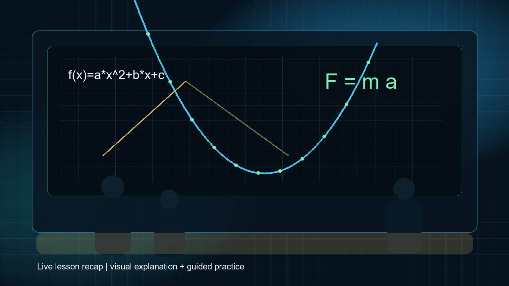
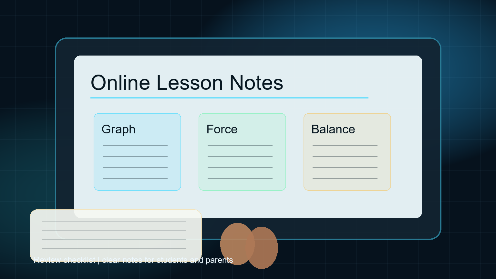
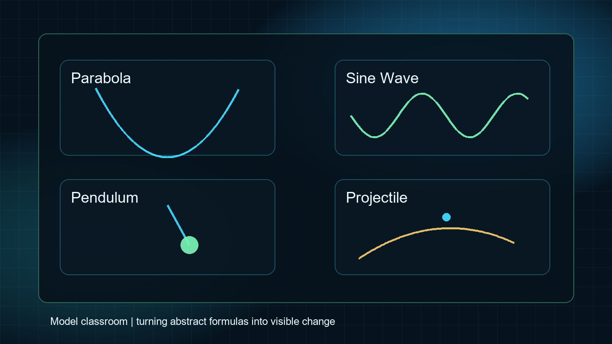

01 / 课堂讲解
先把题目变成图像和模型
函数图像、受力分析、运动轨迹都可以先可视化，再进入公式和计算。

Real Class Flow
从讲解到练习，从笔记到复盘，每一步都让学生知道自己正在解决什么问题。
函数图像、受力分析、运动轨迹都可以先可视化，再进入公式和计算。

把知识地图、典型例题、易错提醒和课后任务整理到一份清楚的笔记里。

通过抛物线、正弦波、单摆和斜抛轨迹理解公式背后的变化关系。
For Parents & Students
对学生来说，看到模型和笔记会更容易相信“我能学会”；对家长来说，看到课堂过程会更容易判断辅导是否有方法、有反馈、有持续推进。
后续如果你有真实课堂照片、讲义截图或学生授权反馈，这个页面可以直接替换为更真实的内容。